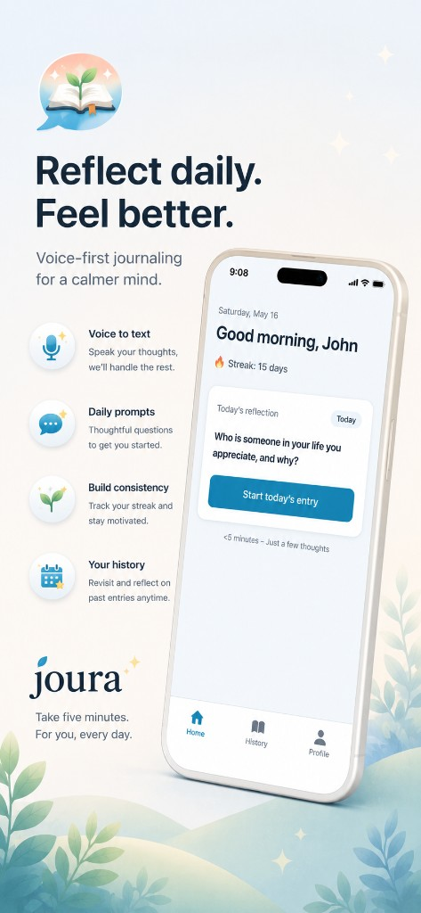
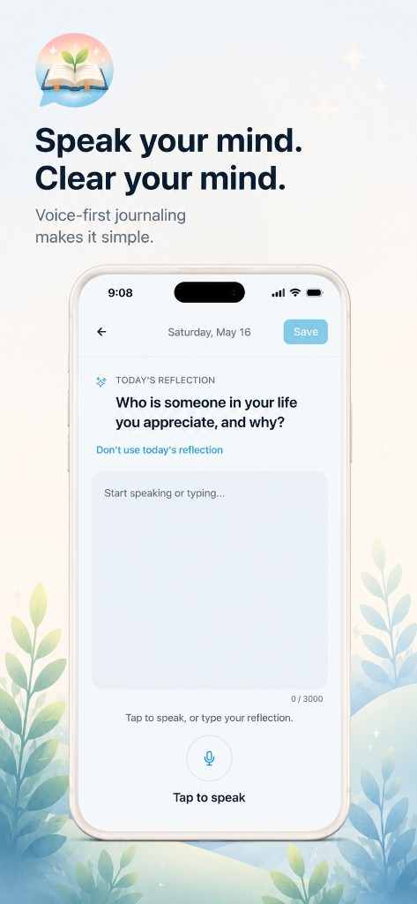
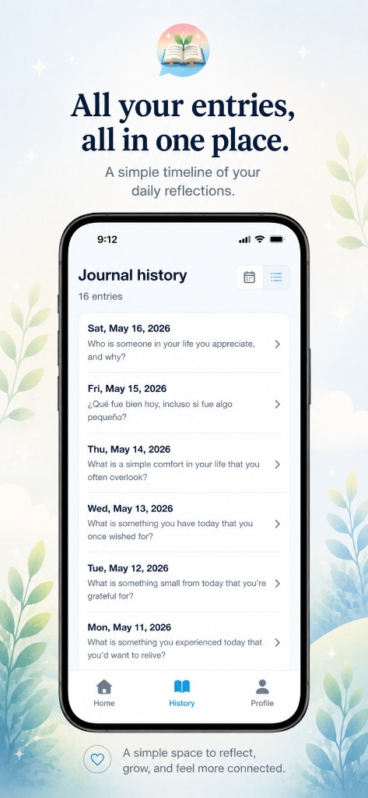
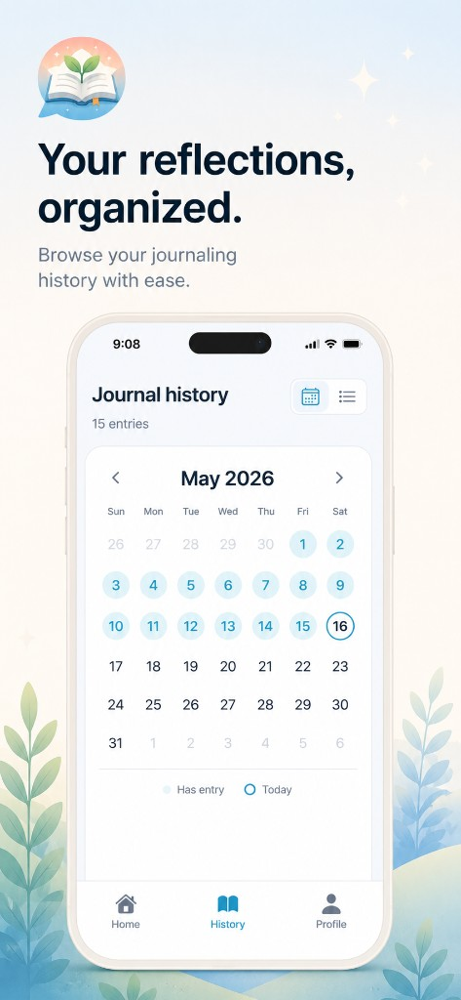
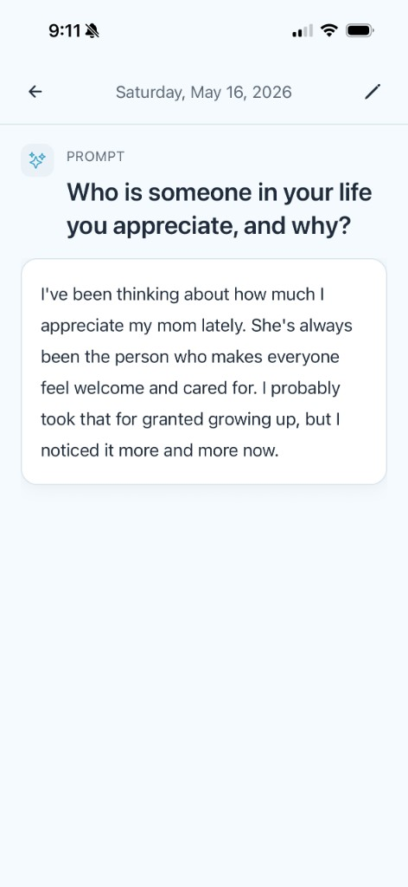

Voice-to-text
Speak naturally. Joura captures your words so you can reflect without typing.
Open Joura, respond to a gentle prompt, and speak your thoughts. A meaningful daily reflection in under five minutes.
Designed for calm, consistent reflection — not endless scrolling or performance pressure.
Speak naturally. Joura captures your words so you can reflect without typing.
Gentle questions guide your thinking — no pressure to fill a page.
A minimal interface that keeps you present with your thoughts.
A soft nudge at the time you choose, so reflection becomes a habit.
See your consistency grow — celebrate showing up, not perfection.
Browse past entries on a calendar view and revisit moments that mattered.
Refine voice transcripts or add a note — your journal evolves with you.
Traditional journaling asks for time, energy, and a blank page. Joura meets you where you are — with your voice, a thoughtful prompt, and five quiet minutes.
A quiet, thoughtful experience from your first prompt to your journal history.





"I've tried journaling apps for years. Joura is the first one I actually use every morning — speaking feels effortless."— Early beta user
"Five minutes with a prompt and I'm done. No guilt about empty pages."— Daily reflector
"The app causes me to take time out of my day to reflect, which has helped me better focus on what's most important in my life."— Daily reflector